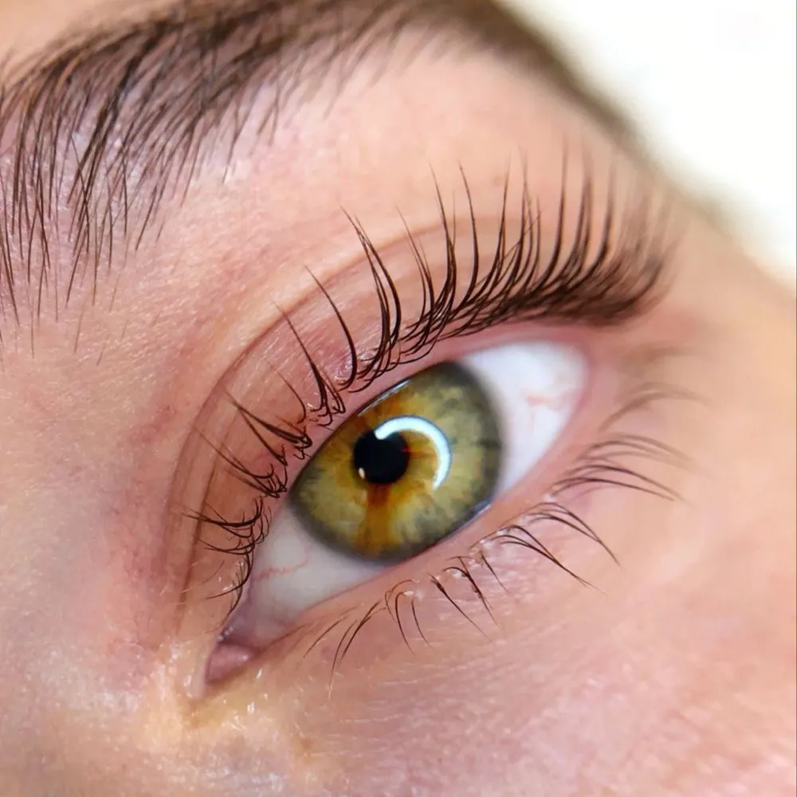
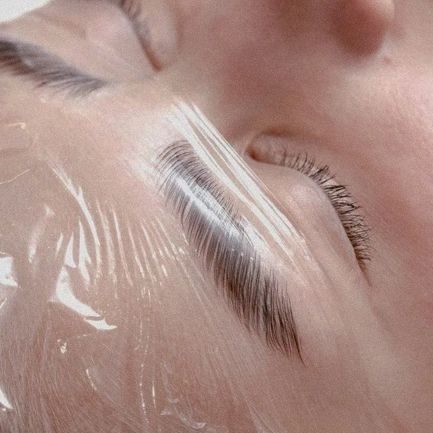
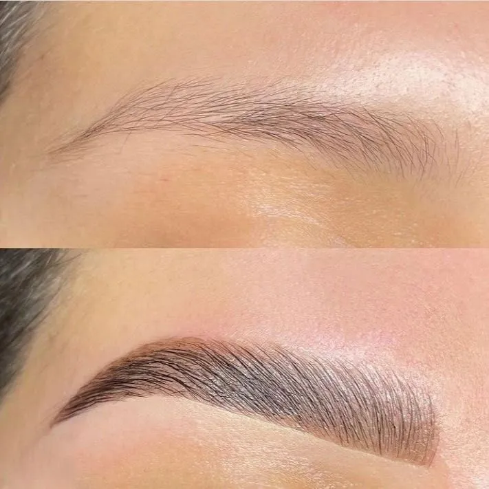
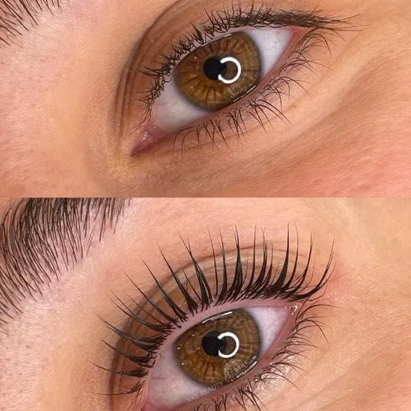
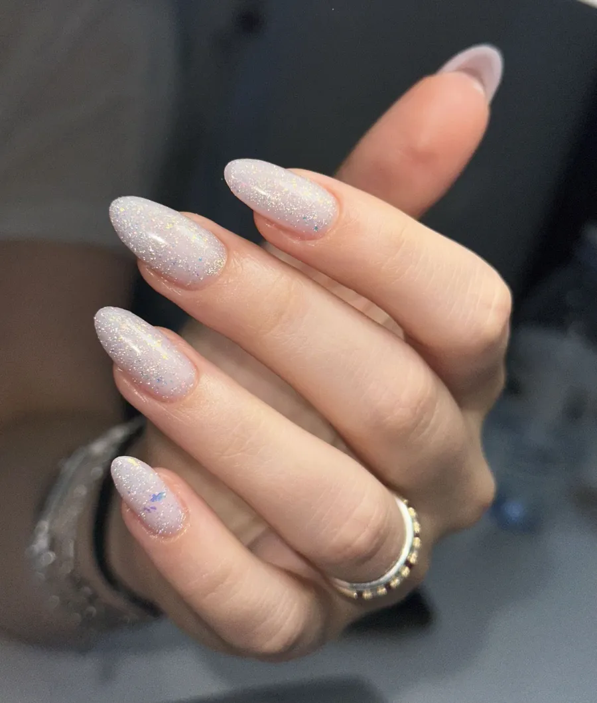
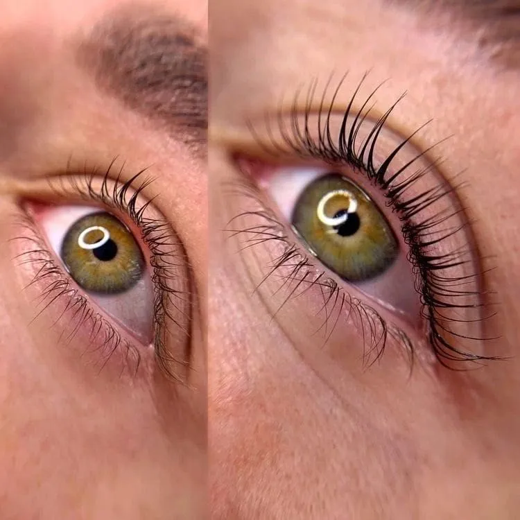
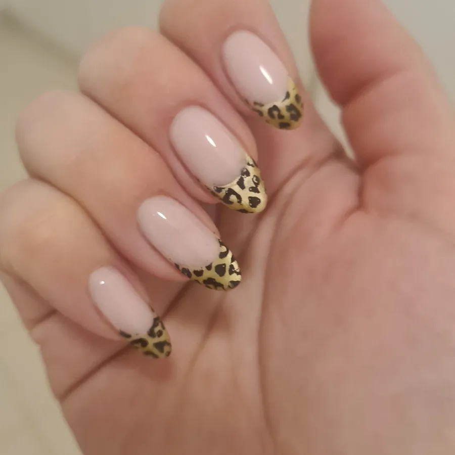

Sobrancelhas
Fio a fio, hiper-realista, powder (efeito pó) ou microblading. Para preencher falhas, redesenhar ou dar estrutura a sobrancelhas finas.
desde150€
Micropigmentação · Lisboa, Saldanha
Rymma Olefirenko trabalha há 15 anos com micropigmentação facial e há 12 forma outras profissionais. Cada desenho é medido no seu rosto antes da primeira agulha.


Rymma Olefirenko
Micropigmentação
A consulta começa pelo desenho: proporção, cor do pigmento e o que quer ver ao espelho. Só depois se pigmenta.
Fio a fio, hiper-realista, powder (efeito pó) ou microblading. Para preencher falhas, redesenhar ou dar estrutura a sobrancelhas finas.

Clássico, rente às pestanas, ou artístico, com cauda. O olhar fica marcado de manhã à noite, sem retocar.

Contorno, aguarela (cor uniforme e leve) ou efeito batom. Devolve cor e definição a lábios pálidos ou assimétricos.

Fios desenhados um a um com dermógrafo, na direção em que o pelo cresce. De perto, a sobrancelha lê-se como natural. Rymma ajudou a criar o curso online desta técnica e ensina-a a outras profissionais.
Tabela de preços
Valores do Booksy, com a duração de cada sessão. A marcação fica feita online, a qualquer hora.
Escolha o serviço e o horário no Booksy. Confirmação imediata.
Resultados
Fotos de clientes reais, sem filtro. Mais trabalhos no Instagram @rymma_pmu.artist

AntesDepois
Como funciona
Sem surpresas: sabe o que acontece em cada fase antes de se sentar na cadeira.
Escolhe o serviço e o horário no Booksy. Se tiver dúvidas sobre a técnica, fale antes pelo WhatsApp.
Medimos o rosto e desenhamos a forma e a cor. Só avançamos quando aprovar o que vê ao espelho.
Entre 1h30 e 2h30, conforme a técnica. Sai com as indicações de cuidado para casa.
Depois da cicatrização, avaliamos o resultado e acertamos o que for preciso.
Para profissionais
Formação presencial em Lisboa e online, do primeiro traço em látex até ao Hair Stroke Realismo com dermógrafo. Com certificação internacional.

Também no estúdio



Equipa
Micropigmentação · Formação
Fundadora do RYMMAPROF. 15 anos de micropigmentação facial e 12 a formar profissionais em Portugal e no estrangeiro. Investe todos os anos em formação nova e leva-a para a cadeira e para a sala de aula.
Unhas · Pés
Manicure e pedicure: gel, base reforçada, manutenção e pedicure SMART.
Perguntas frequentes
Visita
| Segunda a sexta | 10:30–20:00 |
| Sábado | 10:30–14:00 |
| Domingo | Fechado |